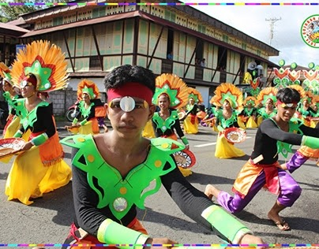

CULTURE & FESTIVALS

FIESTA OF PATRON – ST. ANTHONY PADUA
The name is a corruption of the native term of "gujuban," the imperative form of the root word "gujub" which means to groove. Juban was organized as an independent "pueblo civil" in 1800. Although it was already an independent town, Juban was still under the parish of Our Lady of the Most Holy Rosary of Casiguran. It was in 1817 when Juban was organized into an independent parish with St. Anthony of Padua as its Titular Head. The parishioners celebrate their fiesta in his honor on June 20.
GUJUBAN FESTIVAL
The festival's name is derived from "Guhob," an old local term for extracting sap from the pili tree. The people who did this were called "Paraguhob," and their settlement was known as "Guhoban," which the Spaniards later adapted to "Juban". The festival serves as a tribute to the town's founding (April 7, but it is celebrated in April 9) and its resilient past. During the festival, performers would wear colorful traditional costumes and dance through the streets to depict the town's history, from its indigenous roots to its early encounters with Spanish colonizers.